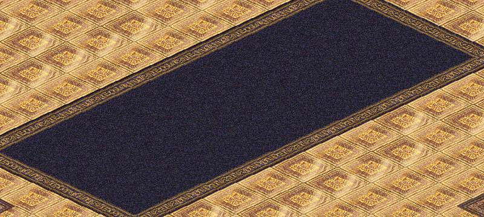

어둠의 전설 모바일 — HUD 시안
배경은 이 저장소의 원본 자료에서 직접 그린 안전 가옥 바닥입니다. 새로 그린 그림은 없습니다. 배치와 조작은 요즘 모바일 게임에서 검증된 방식을 따르고, 패널의 재질과 색은 원작 화면에서 가져왔습니다. 아래 버튼으로 직접 눌러 보세요.

수련생
180 / 250
멜로린
3 / 10
서버와 연결이 끊겼습니다
다시 연결하는 중…